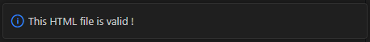
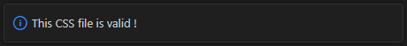
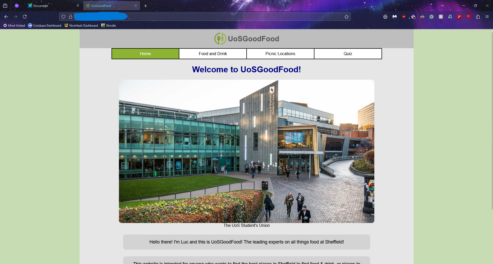
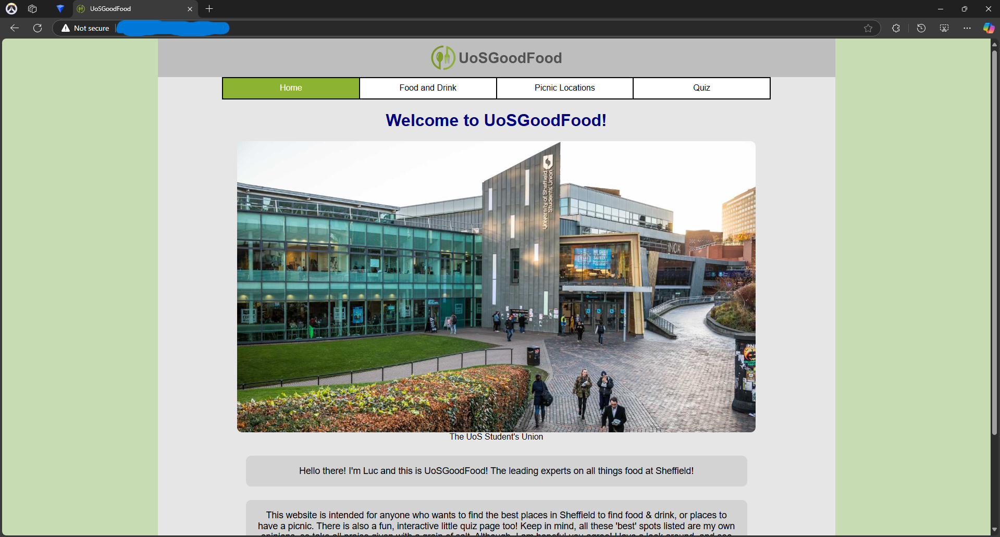
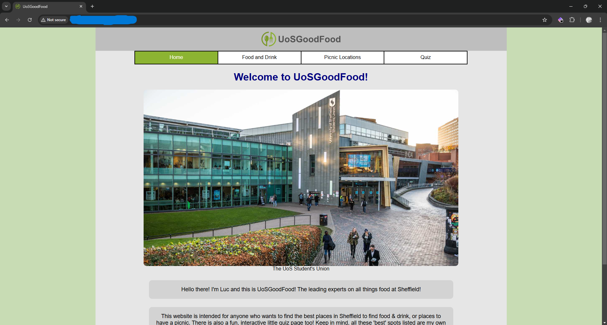
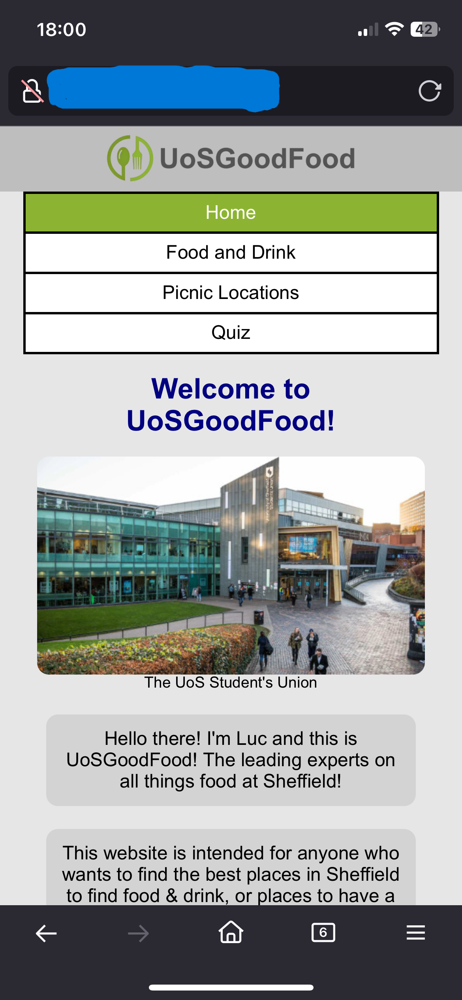
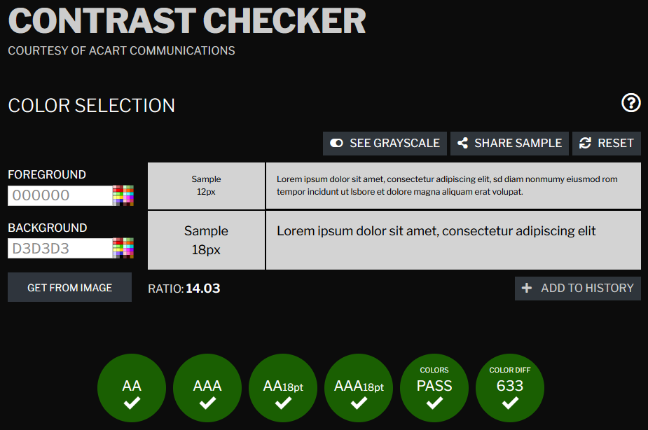
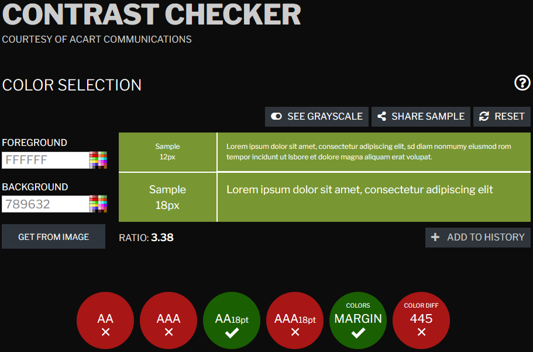
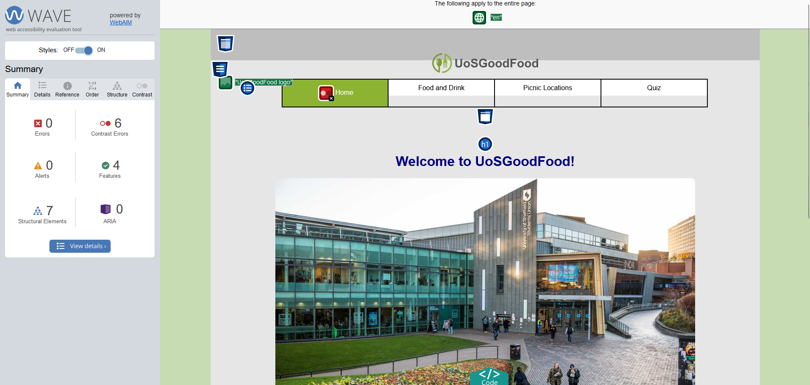

Optimisation
I made sure to consider page loading times on different types of devices. One way I did this was on the home page, whereby I made the image load a higher quality version on desktop, and a lower quality one on mobile. I did this because, on mobile, the quality difference is unnoticeable, and the lower quality increases the loading time. The loading times are important for a website on mobile as they are slower compared to desktops, using a lower quality image aims to avoid any blocky image loading that can impact the user experience. Similarly, I made sure all the images on the other pages are not too high quality, especially since they are much smaller than the home page image, so higher quality images are unnecessary.
Debugging
I used a HTML and CSS W3C Validation extension, which allowed me to check my code against the W3C standard for writing website code. W3C’s standards prioritise web accessibility, internalization, usage, privacy, and security. Therefore, I can be sure my code is being developed in an appropriate way.
The extension automatically checks my HTML/CSS files whenever I save them and tells me if the files are valid or not.


Browser Testing
Below are several tests of my website on different browsers and devices.




All these tests demonstrate that my website is consistent across all browsers and devices (that I have at my disposal to test). I think the main reason the website is consistent is because I used a CSS normalise file, which makes sure any default browser styling is overridden and prevents them from causing issues in the page.
Accessibility
I have made sure that my website is as accessible as possible. One way I checked my accessibility was using a contrast checker for different elements in my page, to ensure the text is readable to as wide a range of people as possible.

Unfortunately, this checker revealed that the contrast of my selected elements was not up to par for accessibility, as seen below.

This shows just how helpful it is to check things like this, ensuring that you make your website available to all.
I also checked how accessible my website is using the WAVE Web Accessibility Evaluation Tool, the results from my home page are below.

The first issue that arose in my pages were the contrast issues addressed earlier, including in locations I didn’t even think to check myself using the contrast checker (such as the footer nav), which was very helpful. It then also suggested I have a title on every page, which I didn’t have for three of my pages, I assume this is to make it easier for people to deduce what page they are on (not just relying on the nav bar), and so screen readers can also read out the title.
Of course, all issues that were found through testing have since been fixed. (The reason the link colour is still white is because I made the text bold, this reduces the colour ratio needed to pass the contrast tests)